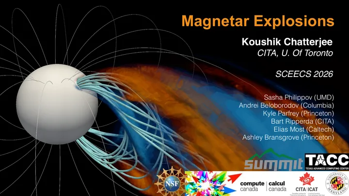
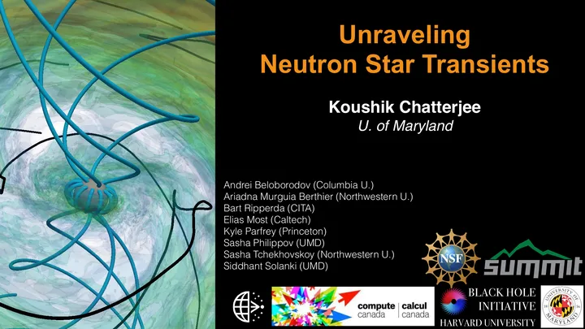
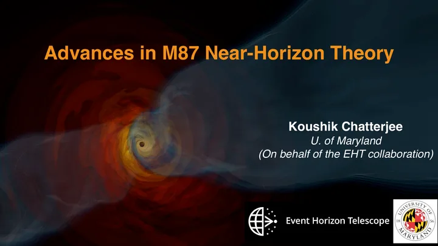
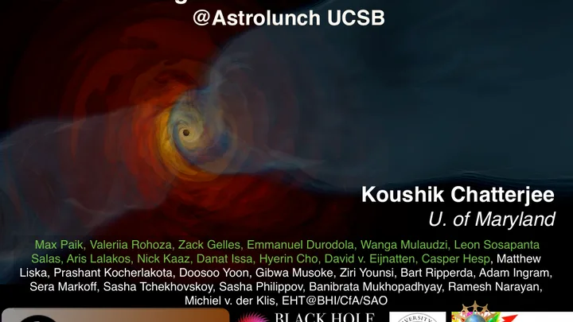
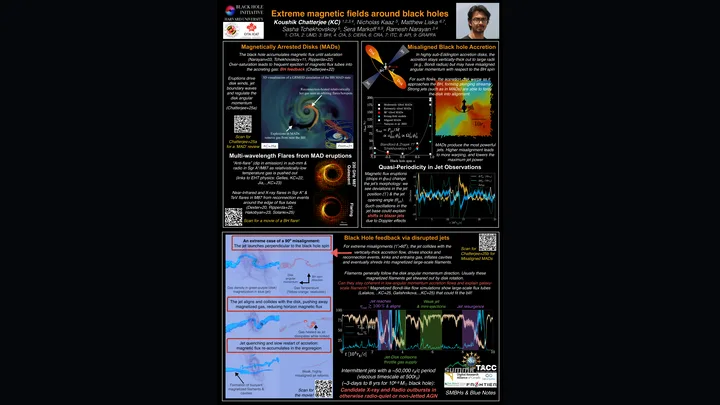

Sharing the physics of the extreme universe
I’ve given 31 invited talks and seminars and 36 conference contributions, sharing work on black holes, neutron stars, and the simulations that bring their environments to life. My talks have taken me across the USA, Canada, Europe, UK, and India.
What I enjoy most is the conversation around a talk: a question from a different perspective, an idea over coffee, or a discussion that grows into a new collaboration. Conferences bring those exchanges together and make the science more rewarding.
Beyond research audiences, sharing astrophysics has ranged from an Event Horizon Telescope outreach discussion to a Space India webinar on black-hole imaging for school students. Slides from recent research talks are available below.

Recent talks
Selected research slides and a conference poster for readers who want to go beyond the overview.

Research talkMagnetar Explosions
SCEECS 2026: simulations of giant flares and magnetospheric eruptions.
Open PDF ↗
Research talkUnraveling Neutron Star Transients
RETCO VI: plasma dynamics and transient emission around neutron stars.
Open PDF ↗
Research talkAdvances in M87 Near-Horizon Theory
AAS 245: theoretical progress on the Event Horizon Telescope’s M87 target.
Open PDF ↗
Research talkExtreme Magnetic Fields Around Black Holes
UCSB Astrolunch on magnetically arrested accretion flows and feedback.
Open PDF ↗
Conference posterExtreme Magnetic Fields Around Black Holes
Montréal 2026 poster on arrested disks, flares, misaligned accretion, and jet feedback.
Open PDF ↗